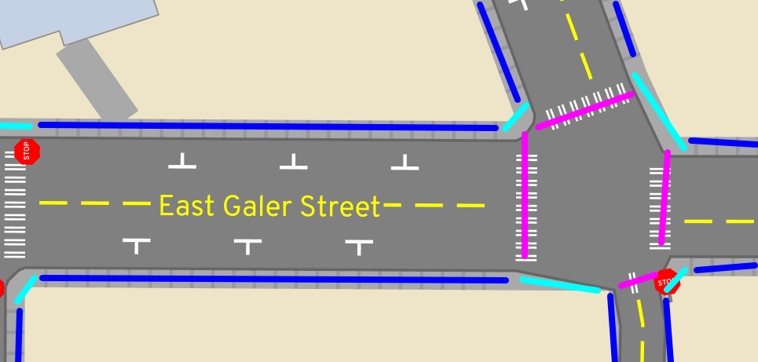
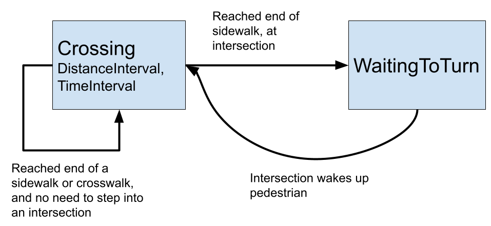

Discrete event traffic simulation, laggy heads, and ghosts
A/B Street's traffic simulation isn't based on any research papers or existing systems, so this article aims to motivate and explain how it works. This article focuses on how the different agents (drivers, bicyclists, and pedestrians) move around. If you're wondering how we figure out where these agents should go or what time they decide to take trips, go read about travel demand models.
I'm not aiming to survey how other traffic simulation models work here. In short, some focus on "macroscopic" patterns, like the volume of traffic along a particular highway over time. A/B Street is more on the "microscopic" side, modeling individual agents making decisions over time. Many such models use "discrete-time" simulation, where every agent senses and reacts to the world every time-step (0.1 seconds or so). A/B Street actually started with this -- see the appendix for more background. But early on, I switched to a discrete-event simulation instead. So, let's jump into that!
Note: I'll provide references to the current implementation. Someday I'll write that article describing how to build a traffic simulation from scratch...
- Starting simple: Pedestrians
- Vehicles
- Lane-changing
- Intersections
- Appendix: discrete-time simulation
Starting simple: Pedestrians
Imagine a simple movement model for pedestrians. Usually they exist at some point along a sidewalk and can move in one direction or the other. At intersections, different sidewalks are connected by crosswalks, and pedestrians can also move bidirectionally on those, after waiting for the right time to cross.
 Sidewalks shown in blue, connected by pink crosswalks and also cyan connections.Everything is bidirectional.
We'll make a few assumptions about pedestrians. They follow the sidewalks and crosswalks perfectly, never deciding to honor their inner Pythagorean. They travel at a fixed speed and change that speed instantly -- no smooth acceleration. That fixed speed could depend on both their preferred walking speed and on the current sidewalk's elevation gain. These poor robotic pedestrians never stop to smell the flowers, write an angry neighborly note, or pet a pupper -- they just walk, or wait. Online dating is also so pervasive in this simulation that pedestrians ghost -- through each other, that is. There are more interesting models of pedestrian movement like the social force model where people change speeds in crowds, but A/B Street is focused on sad American cities where you don't really see many people walking in one place. So there's no collision between pedestrians at all; they just pass through each other, temporarily losing their individuality for rendering purposes:
 This is what it's like when people collide
This is what it's like when people collide
In the world of discrete timesteps, you could imagine each pedestrian has very simple logic. At any moment, they just continue walking one direction or the other at their fixed speed along a sidewalk or crosswalk. Or they pause at the end of a sidewalk, awaiting their turn at a stop sign or traffic signal.
Discrete events
Don't the constant updates every time-step seem wasteful? Most of the time, a pedestrian is in a steady-state -- walking or waiting. Since they walk at a fixed speed, we can just linearly interpolate their exact position at any moment in time if we want to draw them.
Instead of looping through every agent every time-step, in a discrete-event system, we just have one giant priority queue of events, scheduled to happen at some time in the future. Each agent remains in a certain state for a period of time, and schedules an event to transition themselves to a different state.
In the case of pedestrians, this works like this:
- A pedestrian begins at 30 meters distance along their first sidewalk. They want to walk forwards on the sidewalk, so they calculate the distance to the end of the sidewalk -- say another 70 meters -- and divide that by their preferred speed, scheduling an event an appropriate amount of time later -- say 10 seconds.
- For the next 10 seconds, that pedestrian is in the
Crossingstate, which has aDistanceIntervalstating that they're moving on a certain sidewalk from 30 to 70 meters. TheTimeIntervalsays that this state is occuring from time 0 to 10 seconds. We can linearly interpolate to find their position for drawing. - At 10 seconds, the scheduler wakes up the pedestrian. They're now at the end
of the sidewalk, so they look at the intersection and ask to cross. There's
a traffic signal, and the almighty hand says NOPE, so they hand over control
to the intersection and just mark themselves as
WaitingToTurnstate. No events are scheduled to update them. - But the intersection remembers the list of waiting agents. Some time later, the light changes, and the intersection "wakes up" all of the agents who now have a green.
- Our pedestrian calculates a new
Crossingstate for the crosswalk. This state too happens over some distance and time interval. - At the end of the crosswalk, the pedestrian immediately enters another
Crossingstate for the next sidewalk.
We can visualize this with a finite-state machine diagram:

Code references here.
Vehicles
Discrete events are obviously much simpler for pedestrians, but there were some pretty drastic assumptions there that won't work for vehicles. It takes a few more tricks for A/B Street to model cars, bikes, and buses (I'll just use "vehicle" from here on.)
First let's understand what vehicles can do. They travel in one direction along individual lanes, and they queue behind each other -- no ghosting. At intersections, they wait as needed, then move along a "turn," destined for a target lane. There are two major differences from reality that we'll take as assumptions.
First, vehicles instantly change speeds -- no smooth acceleration from rest, or modeling of safe stoping distance. So if a vehicle starts at the beginning of an empty lane, they instantly jump from rest to the maximum speed limit for that road. They travel at that maximum speed limit until the moment their front bumper strikes the boundary between road and intersection, then they stop immediately. This doesn't model highway driving at all, where things like jam waves are interesting to study and require more realistic kinematics and a model of driver reaction time. But A/B Street is focused on in-city movement, and the essence of scarcity I want to model is capacity on lanes and contention at intersections. What happens in between isn't as important. I think you'll find that the overall traffic patterns emerging in A/B Street still look compellingly realistic.
The second article of funny business is lane-changing. Let's assume that vehicles don't change lanes in the middle of a road. Instead, vehicles shift left and right while moving through intersections. So if somebody needs to use a left turn lane, then at the intersection one road back, they'll choose to slide over during their turn. Any conflicting movements with other vehicles is handled at the intersection already.
This also means there's no over-taking. If a car gets stuck behind a bike moving slowly uphill, so be it.
We'll try to relax this second assumption later.
The state machine
So let's figure out how to model these vehicles. The approach used by
pedestrians, with Crossing and WaitingToAdvance states doesn't quite work,
because nothing would stop vehicles from plowing into each other. So let's
introduce a third state -- Queued. When a vehicle enters a new lane, it enters
the Crossing state as usual, calculating the "best-case" time to cross the
entire length of the lane at the max speed limit. This assumes nobody's in the
way! But when this state ends, we can only transition the vehicle to the
WaitingToAdvance state if they're the "lead" vehicle in the current lane's
queue. If they have a "leader" vehicle, then they enter the Queued state and
register as a "follower" of this "leader" in the queue.
When the vehicle at the very front of a lane enters the intersection and vacates
their old lane, then they "wake up" their follower. The follower changes from
Queued back to Crossing. Note that the follower doesn't instantly transition
to WaitingToAdvance, since they're not quite at the end of the lane. Based on
the length of the leader vehicle, the follower has some short distance left to
cover.
We can again understand all of this with a finite-state machine:

Exact positions
Most of the time, we don't care exactly where on a lane some vehicle is. But we do need to know for drawing and for a few cases during simulation, such as determining when a bus is lined up with a bus stop in the middle of a lane.
To calculate exact positions, we walk along each lane's queue from front to back. The key idea is that leaders bound the position of followers, and we can "lazily evaluate" the position of followers. This means that calculating one vehicle's position costs as much as calculating the entire queue's in the worst case, but that's usually fine -- for drawing, we want everyone anyway.
The process is simple. We use each vehicle's state to determine the possible
position of their front bumper. WaitingToAdvance means the vehicle is at the
very end of the lane. For vehicles still Crossing, we linearly interpolate the
time and distance intervals. Then as we walk from front to back, we maintain a
"bound" for the next vehicle's position. This is based on the front position of
the current vehicle, plus the vehicle's length and a fixed following distance
(which, note, is not based on speed).
Laggy heads
Another case where we need to know exact positions of cars is to prevent the first vehicle on a lane from hitting the back of a car who just left the lane. All vehicles have length, and position is tracked by the front of the car. When a car's front leaves a lane, its back is still partly in the lane. Logically, the new lead car in the lane still needs to act like it's Queued. So each lane keeps a "laggy head", pointing to the car with its back partly in the lane. After the laggy head has made it sufficient distance along its new turn or lane, the laggy head on the old lane can be erased, unblocking the lead vehicle. This requires calculating exact distances and some occasionally expensive cases where we have to schedule frequent events to check when a laggy head is clear.
Performance
Lane-changing
Lane-changing (LCing) deserves special mention. A/B Street cheats by not allowing it on lanes themselves. Instead, at intersections, cars can perform turns that shift them over any number of lanes. These LCing turns conflict with other turns appropriately, so the contention is still modeled. Why do it this way? In a previous project, I tried opportunistic LCing. If a car had room to warp to the equivalent distance on the adjacent lane without causing a crash, it would start LCing, then take a fixed time to slide over, blocking both lanes throughout. This meant cars often failed to LC when they needed to, forcing them to reroute, botching their trip times. In many cases the cars would be permanently stuck, because pathfinding would return paths requiring LCing that couldn't be pulled off in practice due to really short roads. Why not try making the car slow down if needed? Eventually it might have to stop, which could lead to unrealistic gridlock. This LCing model was using a detailed discrete-time model with cars accelerating properly; maybe it's easier with A/B Street's simplified movement model.
Currently in A/B Street, cars will pick the least backed-up lane when there's a
choice. They make this decision once when they reach the front of a queue; look
for opportunistically_lanechange in router.rs. The decision could be
improved.
Intersections
I need to flesh this section out. See mechanics/intersections.rs for how stop
signs and traffic signals work. Two things I need to fix before making this
section interesting:
- Only wake up relevant agents when a previous agent finishes a turn.
- Don't let an agent start a low-priority turn (like an unprotected left) if it'll force a high-priority vehicle approaching to wait. The approaching vehicle is still in the Crossing state, so we need to notify intersections ahead of time of intended turns and an ETA.
One contributor to permanent gridlock is cars and bikes being stuck in an
intersection, preventing conflicting turns from being performed. To help avoid
this, one of the last checks that stop signs and traffic signals perform before
accepting a new turn request is that the target lane has enough space for the
new vehicle. This is "reserved" space, not necessarily currently occupied by
vehicles in that lane. This accounts for other vehicles performing a turn bound
for that lane. See try_to_reserve_entry in mechanics/queue.rs. When a car
completely leaves a lane (determined by the "laggy head" described above), this
space is freed, and blocked cars are woken up.
Appendix: discrete-time simulation
A/B Street's first traffic model was discrete-time, meaning that every agent reacted to the world every 0.1s. Cars had a more realistic kinematics model, accelerating to change speed and gradually come to a halt. Cars did a worst-case estimation of how far ahead they need to lookahead in order to satisfy different constraints:
- Don't exceed any speed limits
- Don't hit the lead vehicle (which might suddenly slam on its brakes)
- Stop at the end of a lane, unless the intersection says to go
After fighting with this approach for a long time, I eventually scrapped it in favor of the simpler discrete-event model because:
- It's fundamentally slow; there's lots of busy work where cars in freeflow with nothing blocking them or stopped in a long queue constantly check to see if anything has changed.
- Figuring out the acceleration to apply for the next 0.1s in order to satisfy all of the constraints is really complicated. Floating point inaccuracies cause ugly edge cases with speeds that wind up slightly negative and with cars coming to a complete stop slightly past the end of a lane. I wound up storing the "intent" of an action to auto-correct these errors.
- The realism of having cars accelerate smoothly didn't add value to the core idea in A/B Street, which is to model points of contention like parking capacity and intersections. (This is the same reason why I don't model bike racks for parking bikes -- in Seattle, it's never hard to find something to lock to -- this would be very different if Copenhagen was the target.) Additionally, the kinematics model made silly assumptions about driving anyway -- cars would smash on their accelerators and brakes as hard as possible within all of the constraints.